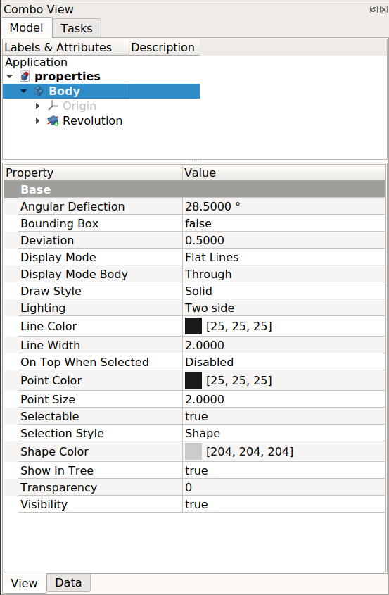
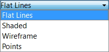
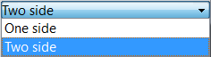

Property View/es
Introducción
La Vista_Propiedad aparece en la sección inferior del panel Modelo (si la Vista_Combinada está activa) o como un panel independiente.
En general, la vista de propiedades está diseñada para gestionar las propiedades de un objeto a la vez. Los valores que se muestran en la vista de propiedades pertenecen exclusivamente al objeto seleccionado. Sin embargo, algunas propiedades, como los colores, pueden configurarse para varios objetos seleccionados. Si no hay ningún elemento seleccionado, la vista de propiedades estará vacía.
No todas las propiedades se pueden modificar; algunas son de solo lectura.
{kind=link}
Las propiedades de datos de una Caja de Pieza
Definición de propiedad
A property is a piece of information like a number or a text string that is attached to a FreeCAD document or an object in a document. Properties can be viewed and modified with the Property editor.
Properties play a very important part in FreeCAD, since it has been designed to work with parametric objects, which are objects defined only by their properties.
Custom scripted objects in FreeCAD can have properties of the following types:
Boolean
Float
FloatList
FloatConstraint
Angle
Distance
Integer
IntegerConstraint
Percent
Enumeration
IntegerList
String
StringList
Link
LinkList
Matrix
Vector
VectorList
Placement
PlacementLink
Color
ColorList
Material
Path
File
FileIncluded
PartShape
FilletContour
Circle
Ejemplo de propiedades
There are two types of feature properties accessible through tabs at the bottom of the property editor:
- VistaView : properties related to the "visual" display of an object.
- DatosData : properties related to the "physical" parameters of an object.
View
{kind=link}

Base
- VistaBounding Box : Indicates if a box showing the overall extent of the object is to be displayed. Value False, or True (Default, False).
- VistaControl Point : Indicates if the feature control points are to be displayed. Value False, or True (Default, False).
- VistaDeviation : Sets the accuracy of the polygonal representation of the model in the 3d view (tessellation). Lower values = better quality. The value is in percent of object's size (deviation in mm = (w+h+d)/3*valueInPercent/100, where w,h,d are the bounding box dimensions).
- VistaDisplay Mode :Display mode of the feature, Flat lines, Shaded, Wireframe, Points

. (Default, Flat lines). - VistaLighting : Lighting One side, Two side

. (Default, Two side). - VistaLine Color : Gives the color of the line (edges) (Default, 25, 25, 25).
- VistaLine Width : Gives the thickness of the line (edges) (Default, 2).
- VistaPoint Color : Gives the color of the points (ends of the feature) (Default, 25, 25, 25).
- VistaPoint Size : Gives the size of the points (Default, 2).
- VistaSelectable : Allows selection of the feature. Value False, ou True (Default, True).
- VistaShape Color : Give the color shape (default, 204, 204, 204).
- VistaTransparency : Sets the degree of transparency in the feature of 0 to 100 (Default, 0).
- VistaVisibility : Determines the visibility of the feature (like the bar SPACE). Value False, or True (Default, True).
{kind=link}
{kind=link}
Data
Base
DatosPlacement: Summary of the data below.
Every feature has a placement that can be controlled through the Data Properties table. It controls the placement of the part with respect to the coordinate system. NOTE: The placement properties do not affect the physical dimensions of the feature, but merely its position in space!
If you select the title Placement , a button with three small points appears to the right. Clicking this button ..., opens the Tasks_Placement options window.
{kind=link}
DatosAngle :
Specifies the angle to be used with the axis property (below). An angle is set here, and the axis that the angle acts upon is set with the axis property.
The feature is rotated by the specified angle, about the specified axis.
A usage example might be if you created a revolution feature as required, but then needed to rotate the whole feature by some amount, in order to allow it to line-up with another pre-existing feature.
DatosAxis :
This property specifies the axis/axes about which the feature is to be rotated. The exact value of rotation comes from the angle property (above).
This property takes three arguments, which are passed as numbers in the x, y, and z boxes in the tool. Setting a value for more than one of the axes will cause the part to be rotated in each axis, by the angle value multiplied by the value for the axis.
For example, with an angle of 15° set, specifying a value of 1.0 for x, and 2.0 for y will cause the finished part to be rotated 15° in the x-axis AND 30° in the y-axis.
DatosPosition :
This property specifies the base point to which all dimensions refer. This takes three arguments, which are passed as numbers to the x, y, and z boxes in the tool. Setting a value for more than one of the boxes will cause the part to be translated by the number of units along the corresponding axis.
DatosLabel :
The Label is the name given to the object (feature), this name can be changed as desired.
PS: The displayed properties can vary, depending on the tool used.
Una propiedad es una fracción de información, como un número o una cadena de texto, que se adjunta a un documento de FreeCAD o a un objeto dentro del documento. Existen muchos tipos de propiedades. Algunos de los tipos más comunes son:
App::PropertyAngle
App::PropertyBool
App::PropertyDistance
App::PropertyFloat
App::PropertyInteger
App::PropertyLength
App::PropertyPlacement
App::PropertyString
App::PropertyVector
Propiedades de Vista y Datos
La vista de propiedades tiene dos pestañas que dan acceso a dos clases de propiedades:
- Propiedades de datos, relacionadas con los "parámetros físicos" del objeto. Estas propiedades definen las características esenciales del objeto y están presentes en todo momento, incluso cuando FreeCAD se usa en modo consola o como biblioteca. Esto significa que, si carga un documento en modo consola, puede editar el radio de un círculo o la longitud de una línea, aunque no vea el resultado en pantalla.
- Propiedades de Vista, relacionadas con la apariencia "visual" del objeto. Estas propiedades están vinculadas al objeto
ViewObjecty solo son accesibles cuando se carga la interfaz gráfica de usuario (GUI). No son accesibles cuando se usa FreeCAD en modo consola o como biblioteca sin interfaz gráfica. Por defecto, los cambios en las propiedades de vista no se añaden a la pila de deshacer y no se pueden deshacer ni rehacer con Deshacer Estándar ni Rehacer Estándar. Pero es posible cambiar esto estableciendo el parámetro Sintonía Fina AutoTransactionView entrue.
Propiedades Básicas
Los distintos objetos pueden tener propiedades diferentes. Sin embargo, muchos objetos tienen las mismas propiedades porque derivan de la misma clase interna.
La mayoría de los objetos geométricos que se pueden crear y visualizar en la Vista 3D se derivan de una Part::Feature. Consulte: Característica de la Pieza para conocer las propiedades básicas de estos objetos.
Para la geometría 2D, la mayoría de los objetos se derivan de un Part::Part2DObject (que a su vez se deriva de un Part::Feature), que es la base de los Croquis y de la mayoría de los Objetos Boceto. Consulte Part Part2DObject para conocer las propiedades básicas de estos objetos.
Menú contextual
Para mostrar el menú contextual de la vista de propiedades, haga clic con el botón derecho en el fondo o haga clic con el botón derecho en una propiedad.
Al hacer clic con el botón derecho sobre el fondo, se muestran tres opciones:
- Añadir Propiedad: Agrega una propiedad dinámica al objeto.
- Expandir/Contraer Propiedades: introduced in 1.1
Los grupos de propiedades se contraen/expanden al hacer clic en su nombre. Los nodos de propiedad se contraen/expanden al hacer clic en el símbolo (normalmente una flecha) que aparece delante de su nombre.
- Expandir a Predeterminado: los grupos de propiedades se expanden y los nodos de propiedades se contraen para el objeto actual.
- Expandir todo: Los grupos de propiedades y los nodos de propiedades se expanden para el objeto actual.
- Colapsar todo: los grupos de propiedades y los nodos de propiedades se contraen para el objeto actual.
- Expansión predeterminada: Cuando se selecciona un objeto, los grupos de propiedades aparecen expandidos y los nodos de propiedades aparecen contraídos.
- Expandir automáticamente: Cuando se selecciona un objeto, los grupos de propiedades y los nodos de propiedades aparecen expandidos.
- Colapso Automático: Cuando se selecciona un objeto, los grupos de propiedades y los nodos de propiedades aparecen colapsados.
- Mostrar Oculto: Si está activo, se muestran las propiedades ocultas de Datos y Vista.
Al hacer clic con el botón derecho en una propiedad, están disponibles las siguientes opciones adicionales:
- Copiar: Copia el valor de la propiedad al portapapeles.
- Cambiar nombre del grupo de propiedades: Cambia el nombre del grupo de propiedades de las propiedades seleccionadas. Solo disponible para propiedades dinámicas. Las propiedades dinámicas son aquellas añadidas por el usuario.
- Cambiar nombre de propiedad: Cambia el nombre de la propiedad seleccionada. Ídem. introduced in 1.1
- Editar Propiedades de Herramienta : Edita la información sobre herramientas de la propiedad seleccionada. Ídem. introduced in 1.1
- Eliminar Propiedad: Elimina las propiedades seleccionadas. Ídem.
- Expresión: Abre el Editor de expresiones, que permite usar Expresiones en el valor de la propiedad.
- Estado:
- Si un valor de estado va seguido de un asterisco (*), es estático y no se puede cambiar.
- Oculto: Si está activo, establece la propiedad como oculta, lo que significa que solo se mostrará en la Vista de propiedades si Mostrar Ocultos está activo.
- Salida: Si está activo, establece la propiedad como salida.
- No Recalcular: Si está activo, modificar la propiedad no afecta a su contenedor para el recálculo.
- Solo Lectura: Si está activo, establece la propiedad como de solo lectura. La propiedad no se podrá editar en la Vista de propiedades. Sin embargo, aún se podría modificar mediante un cuadro de diálogo.
- Transitorio: Si está activo, establece la propiedad como transitoria. El valor de una propiedad transitoria no se guarda en el archivo. Al abrir un archivo, se instancia con su valor predeterminado.
- Tocado: Si está activo, el objeto se toca y queda listo para ser recalculado.
- Evaluar al Restaurar: Si está activo, la propiedad se evalúa cuando se restaura el documento.
- Copiar al Cambiar: Si está activo, la propiedad se copia cuando cambia en un enlace. La propiedad DatosCopiar Enlace al Cambiar del enlace debe estar configurada como
SeguimientooActivadapara que esto funcione. Este comando está relacionado con Variant Links.
- Copiar al Cambiar: Si está activo, la propiedad se copia cuando cambia en un enlace. La propiedad DatosCopiar Enlace al Cambiar del enlace debe estar configurada como
Programación de Scripts
Consulte Características de las propiedades personalizadas en Python.
Preferencias
Consulte Vista Combinada.
- Preferences Editor, Interface Customization
- Main window: Standard menu, Main view area, 3D View, Combo view (Tree View, Task Panel, Property View), Selection view, Report View, Python console, Status Bar, DAG View, Workbench Selector
- Auxiliary windows: Scene inspector, Dependency graph
- File: New Document, Open, Open Recent, Close, Close All, Save, Save As, Save Copy, Save All, Revert, Import, Export,Merge Document, Document Information, Print, Print Preview, Export PDF, Exit
- Edit: Undo, Redo, Cut, Copy, Paste, Duplicate Object, Recompute, Box Selection, Box Element Selection, Select All, Delete, Send to Python Console, Placement, Transform, Align To, Toggle Edit Mode, Properties, Edit Mode, Preferences
- View:
- Miscellaneous: New 3D View, Orthographic View, Perspective View, Fullscreen, Bounding Box, Toggle Axis Cross, Clipping View, Texture Mapping, Toggle Navigation/Edit Mode, Material, Appearance, Random Color, Appearance per Face, Toggle Transparency, Workbench, Status Bar
- Standard Views: Fit All, Fit Selection, Align to Selection, Isometric, Dimetric, Trimetric, Home, Front, Top, Right, Rear, Bottom, Left, Rotate Left, Rotate Right, Store Working View, Recall Working View
- Freeze Display: Save Views, Load Views, Freeze View, Clear Views
- Draw Style: As Is, Points, Wireframe, Hidden Line, No Shading, Shaded, Flat Lines
- Stereo: Stereo Red/Cyan, Stereo Quad Buffer, Stereo Interleaved Rows, Stereo Interleaved Columns, Stereo Off, Issue Camera Position
- Zoom: Zoom In, Zoom Out, Box Zoom
- Document Window: Docked, Undocked, Fullscreen
- Visibility: Toggle Visibility, Show Selection, Hide Selection, Select Visible Objects, Toggle All Objects, Show All Objects, Hide All Objects, Toggle Selectability
- Toolbars: File, Edit, Clipboard, Workbench, Macro, View, Individual Views, Structure, Help, Lock Toolbars
- Panels: Tree View, Property View, Model, Selection View, Python Console, Report View, Tasks, DAG View
- Overlay Docked Panel: Toggle Overlay for All Panels, Toggle Transparent Panels, Toggle Overlay, Toggle Transparent Mode, Bypass Mouse Events in Overlay Panels, Toggle Left, Toggle Right, Toggle Top, Toggle Bottom
- Link Navigation: Go to Linked Object, Go to Deepest Linked Object, Select All Links
- Tree View Actions: Sync View, Sync Selection, Sync Placement, Preselection, Record Selection, Single Document, Multi Document, Collapse/Expand, Initiate Dragging, Go to Selection, Selection Back, Selection Forward
- Tools: Addon Manager, Measure, Clarify Selection, Quick Measure, Units Converter, Load Image, Save Image, Text Document, View Turntable, Scene Inspector, Dependency Graph, Export Dependency Graph, Document Utility, Edit Parameters, Customize
- Macro: Record Macro, Macros, Recent Macros, Execute Macro, Attach to Remote Debugger, Debug Macro, Stop Debugging, Step Over, Step Into, Toggle Breakpoint
- Help: What's This, Start Page, Users Documentation, FreeCAD Forum, Report an Issue, Restart in Safe Mode, Developers Handbook, Python Modules Documentation, FreeCAD Website, Donate to FreeCAD, About FreeCAD
- Additional:
- Miscellaneous: New Part, New Group, Variable Set, Link Group, Select All Instances, Toggle Freeze
- Datums: Coordinate System, Datum Plane, Datum Line, Datum Point
- Link Actions: Make Link, Make Sub-Link, Replace With Link, Unlink, Import Link, Import All Links
- Expression Actions: Copy Selected, Copy Active Document, Copy All Documents, Paste
- Selection Filter: Vertex Selection, Edge Selection, Face Selection, No Selection Filters
- Getting started
- Installation: Download, Windows, Linux, Mac, Additional components, Docker, AppImage, Ubuntu Snap
- Basics: About FreeCAD, Interface, Mouse navigation, Selection methods, Object name, Preferences, Workbenches, Document structure, Properties, Help FreeCAD, Donate
- Help: Tutorials, Video tutorials
- Workbenches: Std Base, Assembly, BIM, CAM, Draft, FEM, Inspection, Material, Mesh, OpenSCAD, Part, PartDesign, Points, Reverse Engineering, Robot, Sketcher, Spreadsheet, Surface, TechDraw, Test Framework
- Hubs: User hub, Power users hub, Developer hub